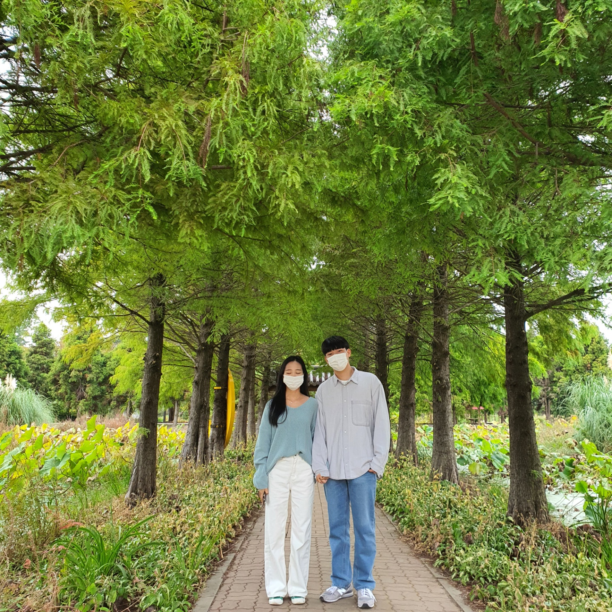
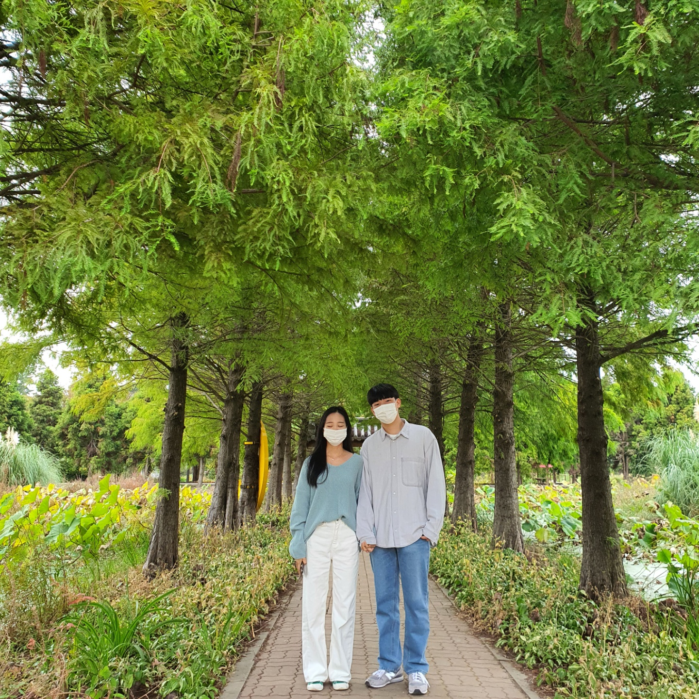
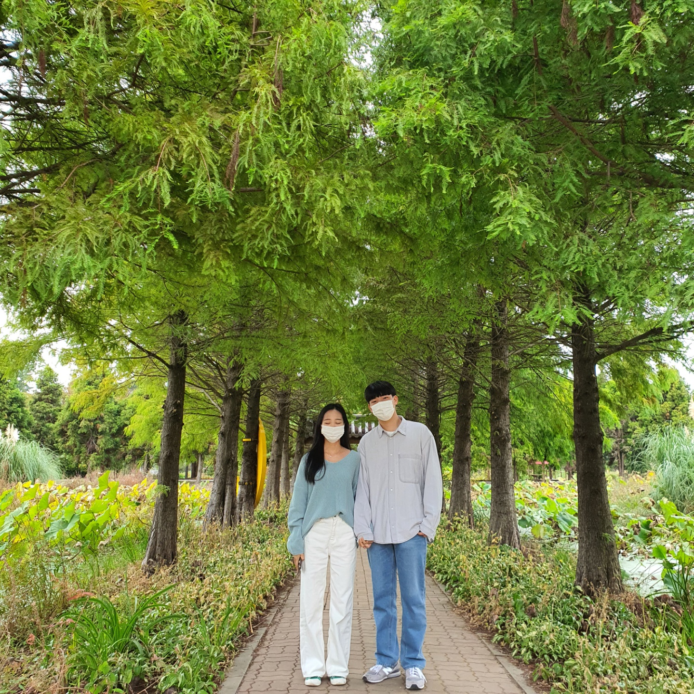

하은아 안녕 ㅎㅎ 나 많이 보고싶지?
이번에는 바로 제목을 봤겠지만 500일에 관해 추억편지를 써봤어 길지 않은 편지지만 잘 봐주길 바라 tmi지만 나 지금 서울에서 이거 쓰고있다가 할아버지랑 큰삼촌한테 용돈받음 ㅋㅋ
내가 군대 가기전에 하은이 선물을 사줬다면 아마 이 돈으로 사줬지 싶엌ㅋㅋ
우선 500일 기념으로 하은이가 정말 감동적이게 500일 기념 사진편지집을 만들어 줬었지 ㅜㅜㅜ 나 그거 아직도 너무 소중하게 보관중이야ㅎㅎ
내가 익산에 가기 전에 받아서 익산에서 기숙사 생활할때마다 읽어보고 외로움을 달랬었지 ㅎㅎ 군대에도 가지고 가도 될라나 모르겠다.. 가져가볼까?
정말 너무 감동적이야 나도 편지를 책으로 써준적이 있었지만 그때 1주일 남기고 와서 많이 못써줬었지 ㅜㅜ 정말 섬세함이 차이가 난달까?
아무튼 너무 고맙고 큰 도움이 되었었어 너무 고맙고 사랑합니당 !!
그리고 또 우리는 500일을 기념으로 뭐했게용? ㅎㅎ 바로바로바로 !! 우리는 핑크뮬리를 보러갔습니다ㅎㅎ
우리의 500일은 원래 10월 30일이지만 그때쯤이면 핑크뮬리 질때쯤이고 나도 학교에서 대면을 하겠다고 오라고해서 가게된 날짜가 곂쳐 10월에 내생일도 함께 축하해줄겸 10월 16일에 가게되었지
기억나? ㅋㅋㅋ 핑크뮬리 참 예뻣는데 그치.. 내년에 휴가 날짜 맞춰서 나올테니 이번엔 좀더 일찍가서 좀더 밝고 예쁠때 가보자ㅎㅎ
암튼 그때 ㅋㅋㅋ 삼각대라도 좀 사갈걸 증말.. 우리 처음 핑크뮬리 모여있는곳에서 다른 커플들한테 부탁해서 사진 찍었잖아 ㅋㅋㅋ 그분들도 부끄러워하고 웃겼는데
아 맞다 근데 이날 아침에 가면 좋았을텐데 좀 늦게 가서 ㅜㅜ 우리 사진 다 찍을때쯤에 노을져서 후다닥 찍었었지 ㅋㅋ
아 근데 사진보면서 쓰고있는데 나 참 옷 못입었다 ㅋㅋ 살을 빼야 진짜 멋지게 입고 가줄텐데 허벅지때메 통큰 옷만 입고다니니 이게 머꼬..
그래도 사진은 점차 발전하고 있다 ㅋㅋ 아무리 재능이 꽝이라도.. 노력하면 좀 늘긴 하나봐 ㅎㅎ
나 군대에서 제대할때쯤이면 장인이 돼서 나올듯 영상으로 공부해야지
암튼 그때 핑크뮬리보고 갈대숲에서 사진찍는데 ㅋㅋㅋ 그때 생각하면 참 귀엽다 우리 정말 삼각대 필수 !_!_!_!_!_!_!_! 같이 찍은 사진이 읎서 정말루ㅜㅜ
그래도 그 나무 숲길에서 착한 커플분들이 찍어주셔서 참 다행이야 ㅎㅎ 옷은 아쉽지만 말이야.. 항상 하은이만 이뻐ㅡㅡ
ㅋㅋ뭐 우리의 추억은 짧지만 다 얘기했고 뭐 그냥 지금 생각을 혼자 얘기해볼라구 ㅋㅋ 뭐 지금 난 하은이랑 페톡을 하고 있는데 이것도 그리울거야 그래두 한 8주정도 참아줘..
자대배치 받고 폰 받자마자 바로 하은이한테 영통걸테니 ㅎㅎ 그때 나 머리 겁나 빡빡이라서 개 못생겼을텐데.. 하은이 얼빠라 나 싫어지는거 아냐? ㅜㅜ
그래도 남아있는 내 사진을 보고 아 범수가 참 잘생겼었지 생각해ㅋ 아 그리고 앞에서 9개의 편지라고 했는데 뭐 시간 되면 더 써놓을라궁 ㅎㅎ 그리고 하은이가 나 군대 들어가기도 전에 볼까봐
나 군대 들어가기 전에 핸드폰으로 사이트 주소 보내주고 가려구 ㅎㅎ 나 가고나서 보셈 그래야 편지의 의미가 있으니깐 !
뭐 자랑할 건 아니지만 이렇게 남겨놓는 남자친구라는 걸 전세계 사람에게 알려.. 블로그 대박 나야지 ㅋㅋ 나 나올때쯤에는 한 1만명 이웃 만들어놩
이쁘게는 못만들어줬지만 내 정성과 시간, 그리고 진심 사랑이 담겼다는 것만은 알아줘
남들의 의심, 핍박, 충고가 많겠지만 하은이는 하은이만의 신념을 가지고 날 기다려줭... 부탁해ㅜ 나 정말 느껴 하루하루가 지날수록 너가 너무 좋다는걸 의심할 수 없을정도로
만에하나 하은이가 날 기다렸는데 내가 하은이에게 잘 하지 못해준다면 그땐 날 많이 미워하겠지만 내가 정신을 못차리고 순간을 회피하는 거라고 믿어줘 나에겐 다른 사람은 없어
하은이 뿐이지 내가 원광대에서 순간 하은이에게 잘못했던 것 처럼 내마음이 어떤지 정확히 파악하는 시간이라고 조금이나마 이해해주길 빌며 글을 적어.. 물론 이것도 욕먹을 짓이지만
이 일이 지나고 나면 난 현재 내가 그렇듯 하은이에게 더욱 빠져들 것이며 내 모든것을 헌신할 준비가 되었다는걸 의미하겠지 이런 말을 왜 하나 싶을텐데
항상 하은이가 기다려주면 내가 달라질까 걱정하는 모습을 많이 보여줘서 이렇게 답변을 남겨둬.. 난 너가 싫어지고 부담스러워 진것이 절대 아님을 맹세한다는 의미야
잠시 나의 감정을 헷갈려 할 수 있지만 정말 오랜만에 사회에 나와 하은이랑 다시 2년전 처럼 살아간다는걸 받아들이는 시간을 가지는 것 뿐임을 알아주기를.. 간절히 기도할게
내가 군대에서 나오고 내가 하은이에게 온전히 돌아가는 날이 온다면 그땐 내가 하은이에게 정말 잘할거라는 자신이 든다!
뭐 좀 오글거리지만 ㅋㅋ 뭐 거진 2달을 연락 못하고 살텐데 이정도는 괜찮지? 말로는 못전한 속마음을 전할 수 있는 시간이라 생각되어 이렇게 편지를 쓰니 주책이더라도 잘 읽어주길바래
마지막은 항상 똑같지만 다른말로 대체할 수 없지 바로 하은아 많이 사랑하고 고맙다 비록 나는 강제로 끌려가 시간을 보내지만 하은이도 마찬가지로 소중한 사람과 강제로 떨어지고 기다리는게
얼마나 힘들지 상상이 가 너에게 위로가 되면 좋겠다 사랑한다 하은아 고맙고 힘들더라도 조금만 힘내줘 그러면 덕분에 내가 힘이날테니 고마워!
